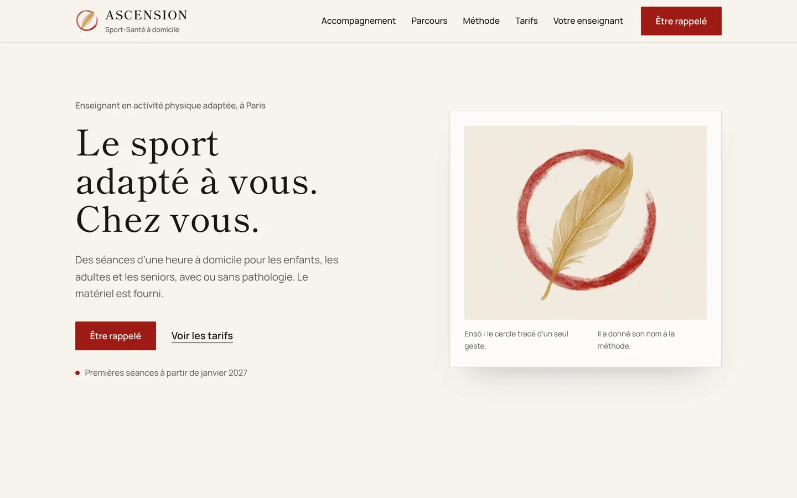
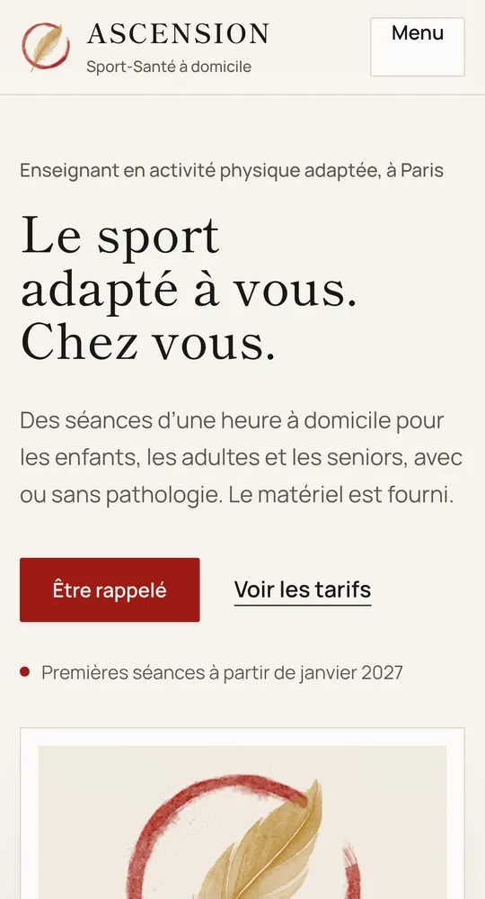
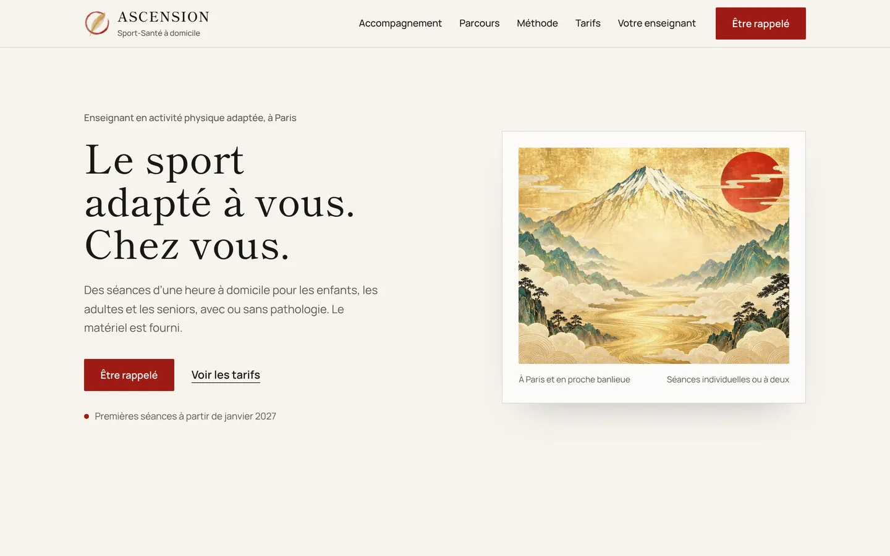
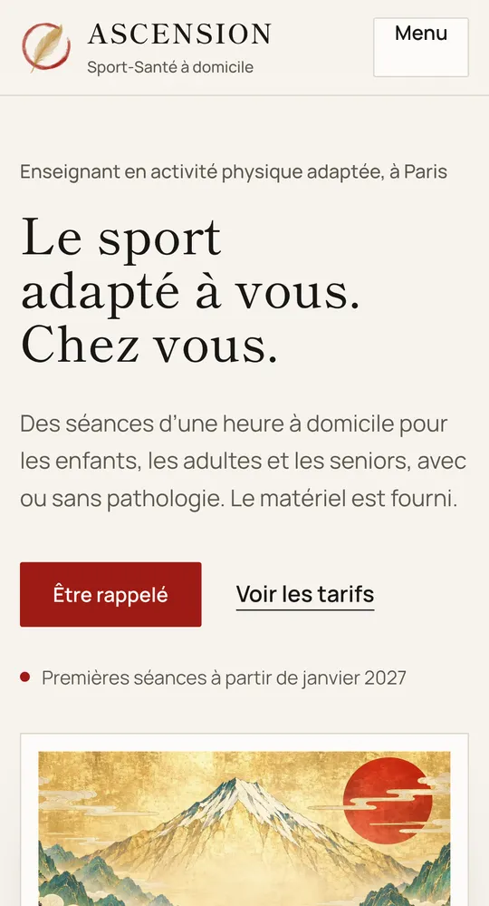

Trois prototypes de la page d’accueil, avec les mêmes contenus pour comparer seulement le style. Chacun se parcourt sur PC et sur téléphone : menu, parcours, méthode, tarifs et formulaire fonctionnent (rien n’est envoyé). Un bouton en haut de chaque prototype passe de la version sans montagne à la version avec.




Prototype A
Premium minimal
Beaucoup d’air, une seule œuvre encadrée comme dans une galerie, des filets fins, le vermillon réservé aux boutons.
Le plus rassurant pour les seniors et les proches : on comprend tout de suite qui vient, pour quoi, comment et combien. Le meilleur pour les appels.
Limites
Il repose sur votre photo : sans elle, la lettre perd de sa force. Visuellement moins spectaculaire que B.
Sur téléphone
Le plus confortable : grands caractères, grands champs, boutons de 56 px.
Vers un vrai site
Effort faible à moyen : structure simple, contenus à écrire pour chaque page.
Comparaison
Critère
A · Premium minimal
B · Identité contemporaine
C · Humain et éditorial
Première impression
Calme, haut de gamme
Forte, moderne, mémorable
Chaleureuse, proche
Lisibilité pour les seniors
Bonne
Correcte
La meilleure
Confiance « santé »
Très bonne
Bonne
Très bonne
Pousse à appeler
Bonne
Bonne
La meilleure
Fidélité à la marque
Forte
Réinterprétée
Forte, plus douce
Effort pour un vrai site
Faible
Moyen
Faible à moyen
Vérifié sur les trois : aucun débordement sur téléphone, aucune erreur dans la console, contrôle automatique d’accessibilité (axe) sans erreur après corrections. Non testé : lecteur d’écran, vrais appareils, réseau mobile.
Recommandation
Partir de C, avec la finition de A et un seul élément fort de B.
De C : la lettre d’accueil, les objectifs du quotidien, la première heure minute par minute, les exemples de bilans, les questions, la police très lisible et le bouton « Textes plus grands ». C’est ce qui parle le mieux à vos clients et à leurs proches.
De A : la retenue (filets fins, beaucoup d’air, vermillon réservé aux actions) et, si vous gardez la montagne, la peinture présentée comme une œuvre encadrée plutôt qu’en fond.
De B : la roue interactive de la méthode Ensō et une couleur discrète par parcours, pour savoir où l’on est.
Pour la montagne, je conseille la version sans : elle respecte votre consigne et l’ensō avec la plume porte déjà l’identité.
Ce que la refonte corrige
Une seule action partout : « Être rappelé » (au lieu de quatre noms).
Le vrai prix en grand, le montant après crédit d’impôt plus petit avec une note, sous réserve de l’enregistrement de la déclaration.
« Premières séances à partir de janvier 2027 » près des boutons.
Un formulaire de quatre champs, sans question de santé.
SIRET, carte professionnelle et diplômes visibles.
Exemples de bilans marqués « personne fictive » sur chaque carte.
Pas de pastilles qui recouvrent le contenu, contrastes conformes.
Pages beaucoup plus légères : ni vidéos de fond, ni moteur 3D.